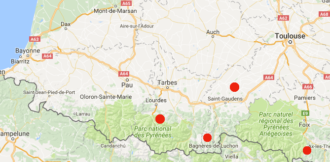
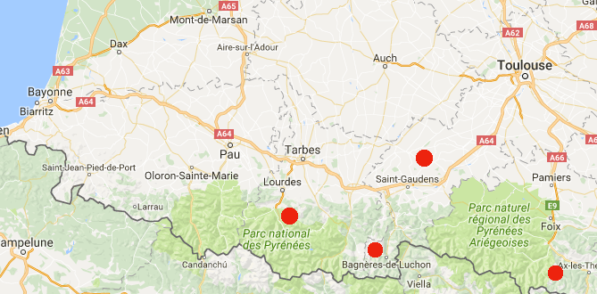
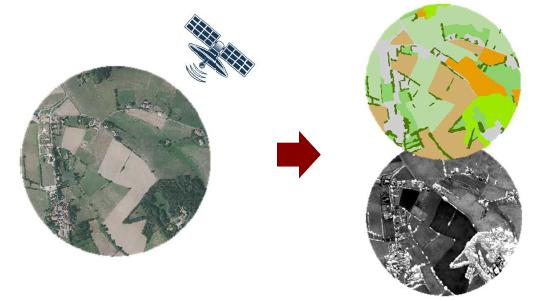
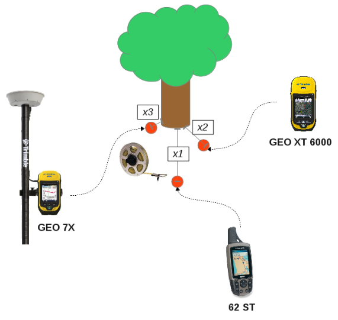
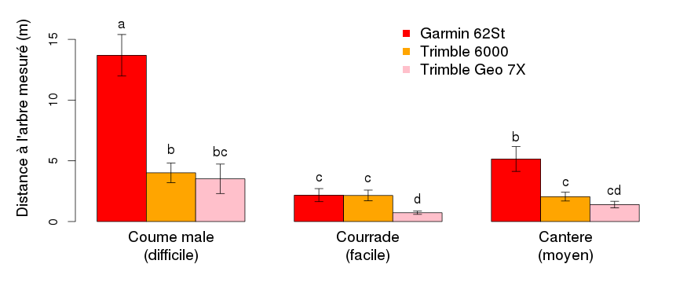
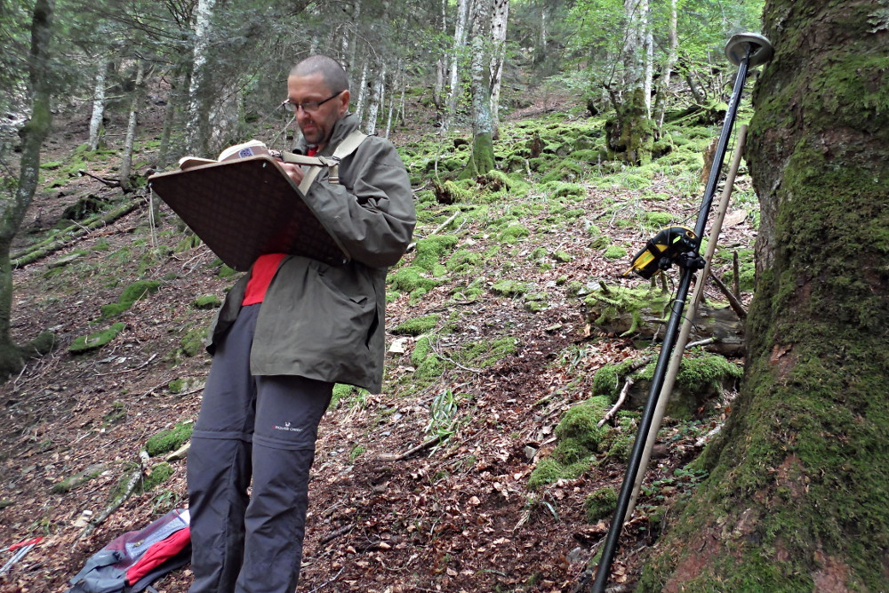

- Contexte de l'étude
- Forêts de montagne
- Dendro-microhabitats
- Le système GPS
- Objectifs de l'expérience
- Mode opératoire
- Premiers résultats
- Conclusions provisoires
Une antenne GPS centimétrique autonome low-cost.
Oui ça existe !
Wilfried Heintz, Laurent Burnel, Jérôme Molina, Julien Ancelin
UMR 1201 Dynafor, INRA, Toulouse
Présentation
Contexte


Ecologie des paysages agri-forestiers
Contexte
 

Ecologie des paysages agri-forestiers
- Recherches pluri-disciplinaires :
- Différents taxons
- Différentes zones d'études
- Suivis à long terme
Contexte

Ecologie des paysages agri-forestiers
- Des besoins communs :
- Cartographier les territoires
- Géolocaliser nos objets d'études
Les forêts de montagne

Un milieu particulier
- Fortes pentes
- Orientations défavorables
- Couvert forestier très dense
- Zones rocheuses
Les dendo-microhabitats

Des exigences de précision
- Re-identifier des arbres plusieurs années après
=> s'approcher le plus près de l'individu
- Le plus rapidement possible
Le système GPS

Global Positionning System
- Calcul de phase avec satellite
- Précision de 5 à 15m
- Dépendante du matériel
- Et des conditions environnementales
Objectifs de l'expérience

Comparer la précision de plusieurs appareils
- Grand public
- Haut de gamme
- Haut de gamme + corrections temps réel
Mode opératoire

1/ Prise de coordonnées
- 3 zones à la topographie distincte (30 arbres par zone)
- Un référentiel : télémètre laser
- Chaque appareil enregistre les coordonnées
2/ Retour à l'arbre
- Suivant les coordonnées de références
- En un temps limité
- On évalue la distance à l'arbre
Premiers Résultats

Conclusions provisoires
- Différences de précision significatives
- Importance du premier relevé !
- Bien définir les conditions d'exploitation de l'appareil
- Bien choisir sa saison d'expérimentation
- D'autres facteurs à tester : éphémérides, marque du GPS ...
